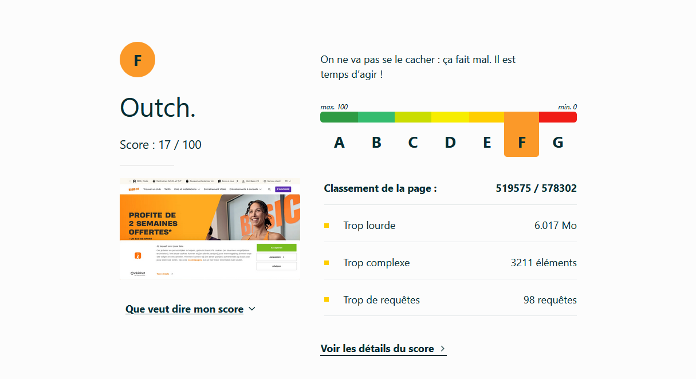
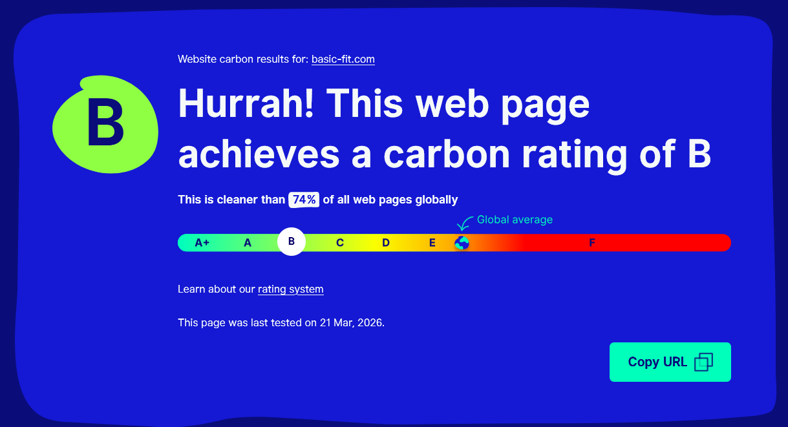

Les mesures montrent une page lourde et complexe
17/100EcoIndex · classe F
6.017 MBpoids de la page
98requêtes HTTP
3211éléments DOM


WebsiteCarbon donne une note correcte côté carbone, mais EcoIndex pénalise fortement la page à cause de sa complexité front-end.